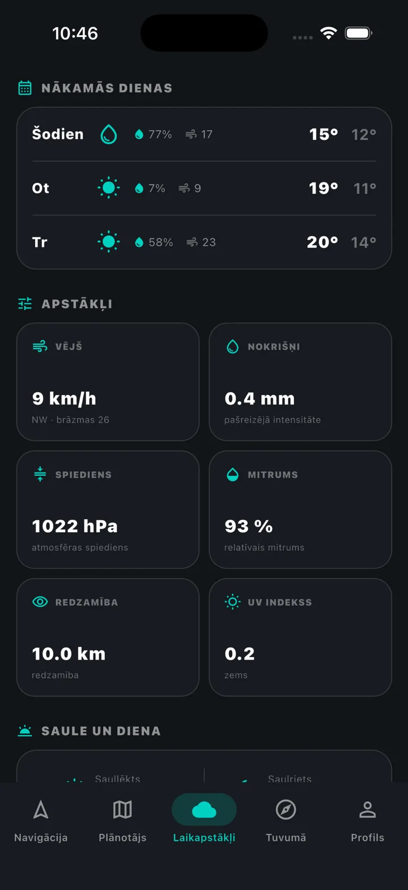
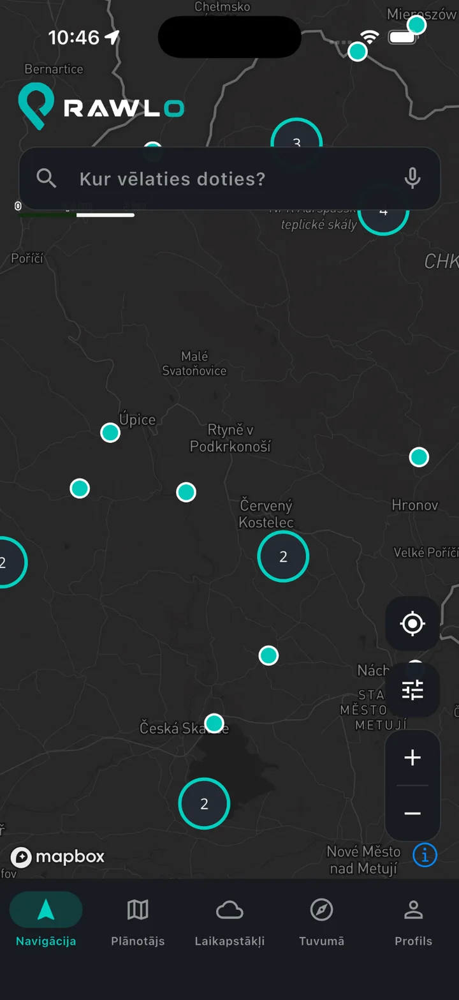
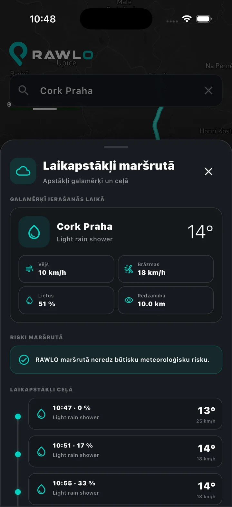
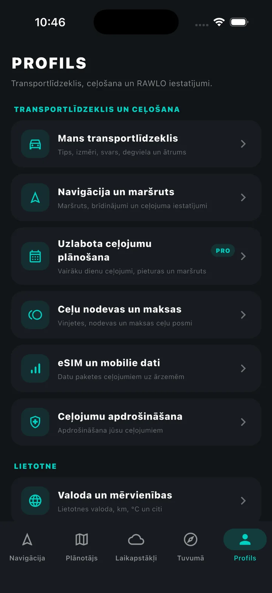

Satiksme atbilstoši jūsu kemperim
Ceļu darbi, slēgumi un ierobežojumi tiek vērtēti pēc transportlīdzekļa izmēriem un masas.
Plānojiet kopā. Brauciet drošāk. Atklājiet vairāk.
Plan the entire trip, share it with your travel companions, navigate with vehicle-specific restrictions, find camper places and understand the weather along your route.


Set height, width, length and weight once. RAWLO uses your vehicle profile when checking routes and warns you about restrictions that matter for a large camper.

Ceļu darbi, slēgumi un ierobežojumi tiek vērtēti pēc transportlīdzekļa izmēriem un masas.
Iestatiet maksimālo braukšanas ātrumu. RAWLO nepārtraukti pārrēķina brauciena un ierašanās laiku.
RAWLO seko laikapstākļiem visā maršrutā un brīdina par negaisiem, sliktu redzamību, stiprām brāzmām un sānvēju.
Create a multi-day trip and invite your partner, family or friends. Give them view or edit access so everyone can add stops, choose campsites and shape the itinerary together.
Later, public trips can become inspiration too: copy a shared itinerary and adapt it for your own camper.
RAWLO connects the forecast with your route and ETA. See conditions at the destination, along the drive and receive warnings about wind, storms or other weather risks ahead.
Campsites, camper stops and service points with practical details such as water, electricity, WC, showers, waste disposal, Wi-Fi, pets, seasonality, pricing and booking options.
See route restrictions before departure and get relevant warnings while driving: road works, traffic, fixed cameras, average-speed zones and dangerous conditions.
RAWLO is designed to connect the practical services that normally live in separate apps and websites.
Save vehicles, favourite places, photos, ratings, planned trips, completed journeys and trips shared with others.

RAWLO is being built on Europe-wide datasets and a multilingual foundation — not as a local app translated later.
These screens come from the app we are actively developing. The interface and individual features will continue to evolve before launch.
No. Navigation is a core part, but RAWLO is designed for the full camper journey: planning, collaboration, places, weather, travel services and trip history.
Yes. Collaborative planning is one of RAWLO’s main pillars, not a later add-on.
The product is being designed primarily for motorhomes, campervans and caravans, where dimensions, weight and road restrictions matter.
Not necessarily. Some integrations and community features are still in development. The website clearly describes the RAWLO product direction without claiming unfinished partner services are already live.
RAWLO is being built as one European home for camper travel.
“What about adding one night by the lake?”